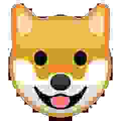
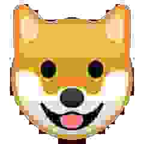
 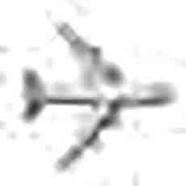
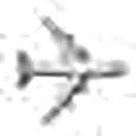
 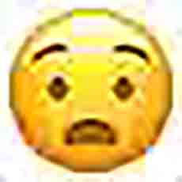
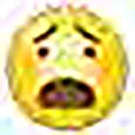
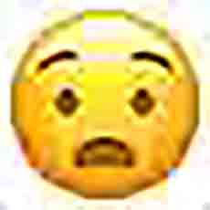
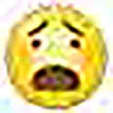

 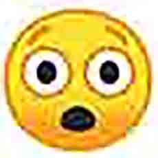
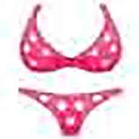
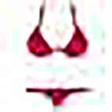
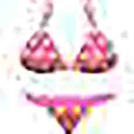
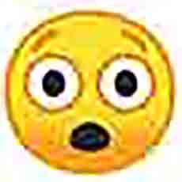
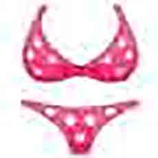
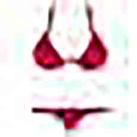
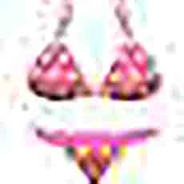
 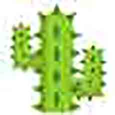
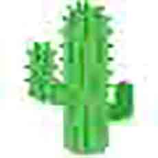
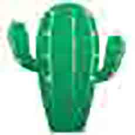
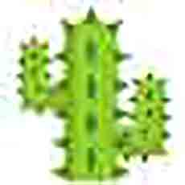
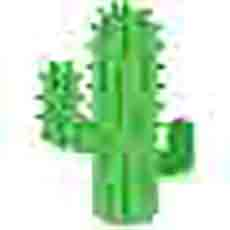
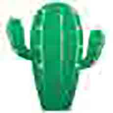


 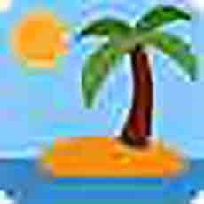
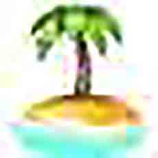
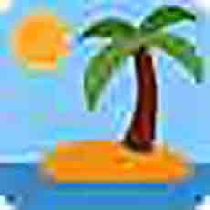
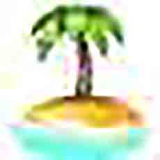
 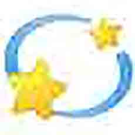
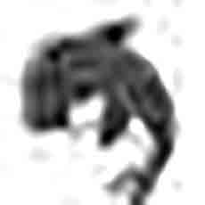
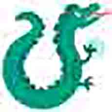
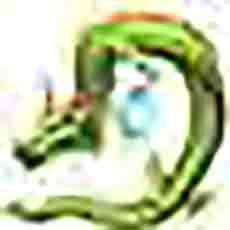
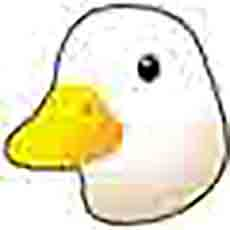
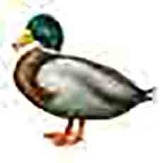
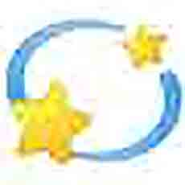
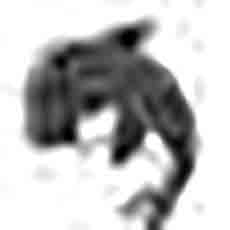
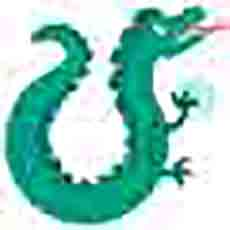
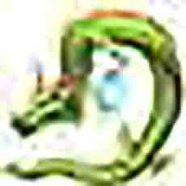
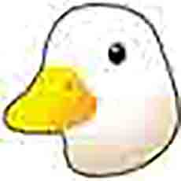
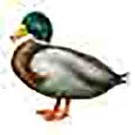


 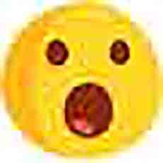
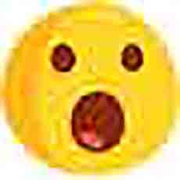


 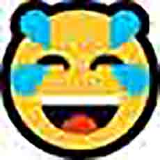
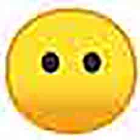
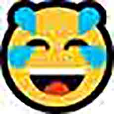
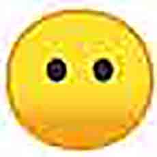
 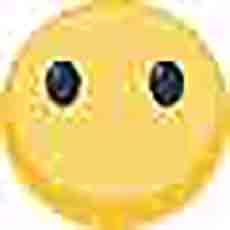
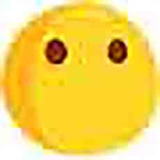
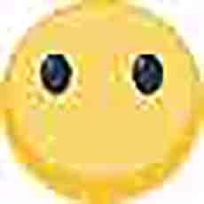
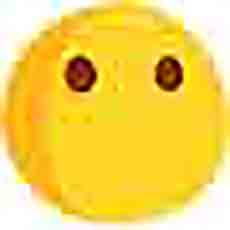
 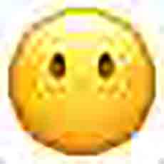
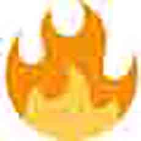
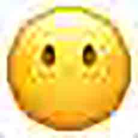
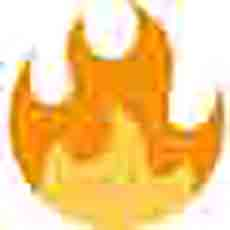


 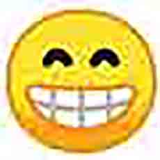
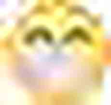
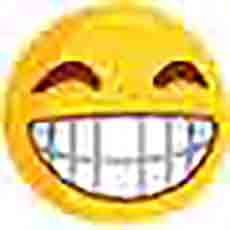
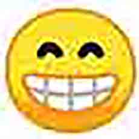
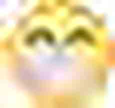
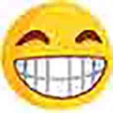


 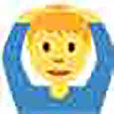
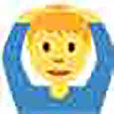

 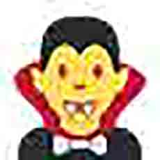
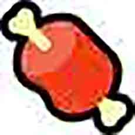
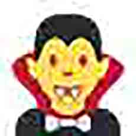
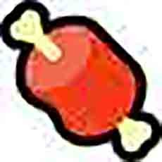
 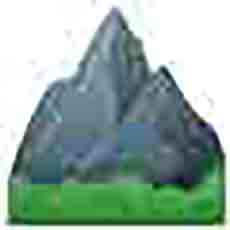
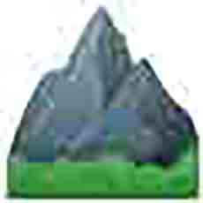


 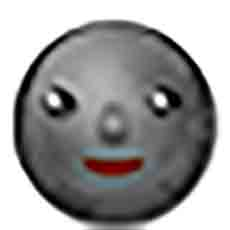
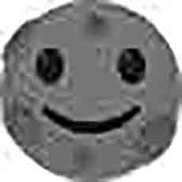
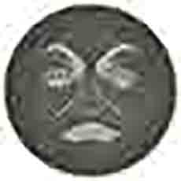
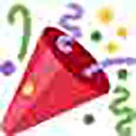
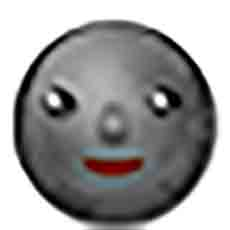
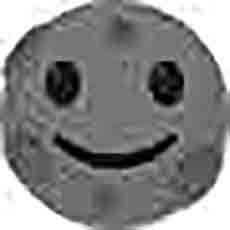
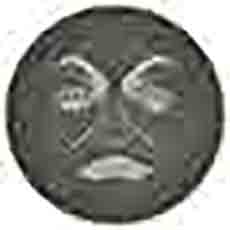
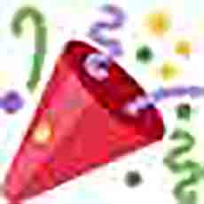
 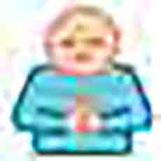
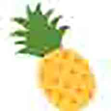
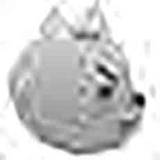
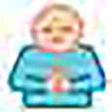
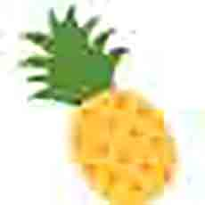
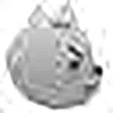
 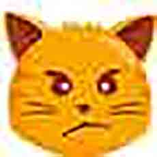
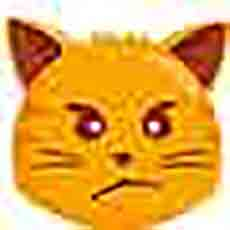


 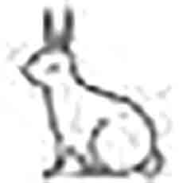
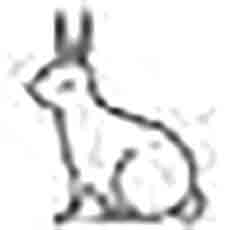

 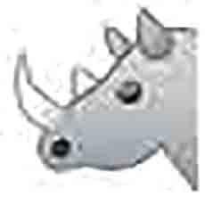
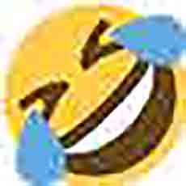
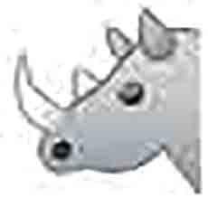
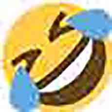


 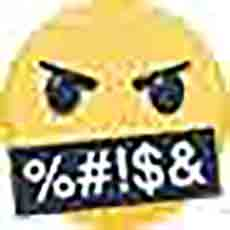
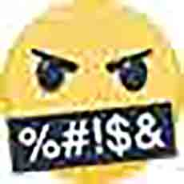

 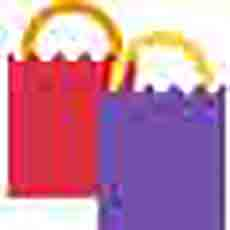
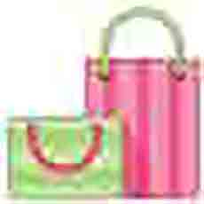
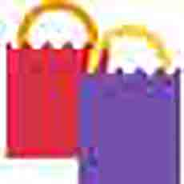
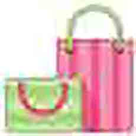
 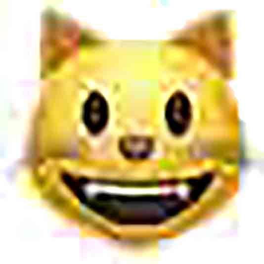
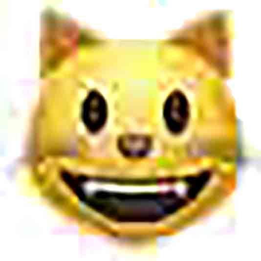
 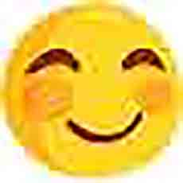
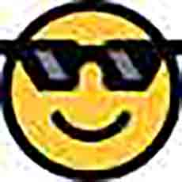
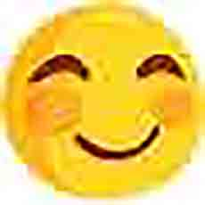
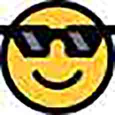


current language
ok so now that we got the previous languages out of the way lets rlly hone in on the current lingo. i would say it probs started around the early 2010s. where leet n lol speak were more niche and specific to ingroups the current language is more widespread extending to mainstream social media as well as meme culture and has a lot more grammatical specificity
john mcwhorter a well known linguist put forward the idea that texting n contemporary internet language is actually fingered speech. ik that sounds grody but it rlly means that the way we talk on the web is an attempt at mimicking the way we speak. (thats why its called webSPEAK not webwrite lol) through history speeches n formal talks have always been trying to imitate the way we write lk fuckin shakespeare it’s super fancy n lk no one actually knows what ppl r saying but since communication has been increasingly web oriented language has to catch up
grammar now is a way to communicate the subtleties of spoken word especially in the effort to make up for communication pieces we r missing thru the web fr ex factial expression n emphasis
pieces
so in this section of the book were gonna rlly break down the pieces of contemporary webspeak, what r the pieces, how do they work n how have they changed, what does it matter
it’s important to note the appropriation of contemporary grammar in webspeak, we’ll get into it w each component but be aware a lot of the subtlety of webspeak is in the collective reassignment of meaning in traditional grammar structures which have mostly been used to pace and structure a writing piece
txt style
current webspeak is probs most well known fr the truncation of words plus acronyms and abbreviations
these things aren’t lk New fr writing, but the cool thing abt the web is how many new ones have become a part of the vernacular as well as many r temporarily popular n later forgotten
webspeak is rlly influenced by the advent of texting on cell phones bc when texting first became accessible most ppl still had flip phones where it would b difficult to type out full words n sentences also the screen was small n texts had length caps n phone companies often charged by the letter
bc this form of communication was evolving simultaneously with communication on the web there was a lot of overlap and texting style basically became absorbed into webspeak
while there r a lot of different ways ppl can truncate words patterns have def emerged w what is considered appropriate
part of the reason letter dropping n truncation occurs is the casual tone that those phrases then convey bc when someone is comfortable enough to not b exactly proper it feels like more sociable n friendly
its easy 2 notice that mostly vowels r dropped when truncating but that’s not exclusively tru lk it’s more that the unnecessary letters r dropped lk thanks can become thx or ty bc u can still understand what they mean also altho this is less clearly defined many ppl have a noticeably different internal pronunciation fr truncated words than for their full spelling which is why u might find both the short n long form in the same sentence this is along the same lines as how truncation presents a more casual tone
aside
around 2005 or so i was in middle school cell phones were basically just becoming a Thing n i had some rlly crappy flip phone. i was immediately into textspeak first bc if was rlly hard to type on my flip phone. for a while lk most of high school i had this awful little blue brick with a full tiny keyboard. i had a p strict texting limit n my social interactions esp hang out planning were increasingly text based. my first ever relationship w a boy mostly occurred thru corny texts. i was rlly into textspeak to the point where i had some more prescriptivist friends who would make me resend a message spelled out traditionally. i def would go back n forth between more stylistic n more traditional grammar n i think my current text style is sort of an in between
intentional typos
so speaking of truncation n how it can b a style choice intentional misspelling has become a p big part of webspeak as well

we def see this in lolspeak and even in some parts of leetspeak but there is a lot more breadth and specificity in current webspeak
truncation has become a way fr ppl to mimic vocal tones so that intentionally diff spellings or misspellings have a diff connotation and feeling this is a relatively new thing n creates some generational gaps bc older ppl think that truncation is a result of bein rushed or lazy whereas younger ppl use it to communicate their tone
there have honestly been so many stylistic additions to webspeak just in ref to the acronyms n abbreviations it could probs b it’s own book (there r some in the glossary at the back of the book)

lol
probs the most singularly impactful part of webspeak is the acronym lol
originally meaning laugh out loud lol was a part of the mass of acronyms added to the vernacular when texting became popular including lmao (laugh my ass off) rotfl (roll on the floor laughing) and rotflmao (rolling on the floor laughing my ass off)
lol was used rlly frequently during the image macro meme era so like 2006ish i mean lolcats literally has it in its name but after that meme was exhausted n web culture moved on lol was basically abandoned
actually all of the acronyms i mentioned earlier died out i mean that progression is just how the internet works
anyway lol is really special bc it started being used again in around 2011 it was originally brought back as an ironic Thing lk ppl used lol as a joke in reference to the fact that ppl used to use it fr real which is lk very much standard fr web humor in general
eventually ppl started using it unironically bc of how normalized it was but it took on an entirely new meaning lk it hasn’t actually meant ‘laugh out loud’ for years
linguist john mcwhorter describes lol as a pragmatic particle which is basically a thing that denotes empathy sayin that another way it’s lk adding an lol lets the reader kno to not take the sentence seriously or gives it a casual tone it’s also been called an illocutionary force which is just a marker that shows the intent of the speaker
aside
i literally remember using lol fr its intended use when i had a flip phone (2006 ?) and when i started using it ironically (tumblr 11ish) n then unironically (also tumblr 13ish) it is my fave part of internet culture
punctuation
so everyone knows how punctuation is used in traditional grammar (it’s pacing n tempo) n on the web it’s sorrrrta similar but it’s a lot more specific
traditionally punctuation is super uniform lk u expect a period at the end of a sentence or a comma after however but now punctuation is way less standard bc webspeak is rlly informal lk as if ppl were having a casual conversation in person
period
by this point in the book u def woulda noticed that i use periods rlly minimally mostly to break up two sentences that dont flow as a run on but this is literally an arbitrary style choice rather than anything else webspeak is more lk rlly long run on sentences to complete a thought altho the adept web linguist will kno where the breaks r supposed to b
the hard stop that was once provided w a period is now represented by a hard enter which is an effect of texting mixing w webspeak bc thoughts / phrases r sent individually as a sequence of texts
periods have a sense of finality to them so they r generally avoiding in texting bc text convos r generally ongoing n dont have a definite end
all this to say that periods r not useless in fact they have basically taken a completely new connotation since they r so rarely rarely used adding a period is very intentional Choice n it has come to represent a negative or curt tone
similar to word truncation theres a p big generational split very specifically w period use lk above all diff punctuation forms bc it’s the one w the most changed connotation
Youths tend to not use periods while older folk use traditional grammar which often leads to a miscommunication of tone fr the young person bc they have learned to read periods as negative or serious while the older person is just being grammatical this is sort of a growing pain of webspeak bc being able to convey seriousness visually is absolutely important to the lexicon of tonality found in webspeak but it’s kind of unfortunate it’s been assigned to an already existing structure altho it does totally make sense
ellipsis
traditional ellipsis r three periods together n represent either an omission of a word or phrase or that a sentence continues / is trailing off but on the web ellipsis are mostly used to pace or add breaks to sentences n the number of periods in an ellipsis usually represent the length of break altho it is fairly arbitrary
since it is tied so heavily w timing it also can be a sort of suspense builder
ellipsis also can replace traditional punctuation altho they still function as a pacing break
similar to the lack of periods in webspeak ellipsis are v open ended n dont convey finality in ur sentences
heavy ellipsis use is very typically webspeakey n has even been a foundational part of some memes
! n ?
exclamation points n question marks have def changed the least in the transition to webspeak they still convey their respective og meanings but have gained some new formats n applications altho they r v similar in use
following the web’s abandonment of ending punctuation adding an exclamation point or question mark is a v deliberate action and holds an extra emphatic weight
also both r commonly found now in the middle of sentences bc they have taken pseudo onomatopoeia function where they cn stand alone as a phrase
repetition
the repetition of punctuation is something we rarely see in traditional grammar but its fairly constant in webspeak
as mentioned b4 exclamation points n question marks r sometimes used as onomatopoeia n often they r represented w a string of punctuation i think bc it feels more like a word
somethin i find rlly cool abt how webspeak evolves is its interaction w web culture lk the awareness of using repeated punctuation became a text based meme starting w lolspeak
the premise is rlly simple where ppl who would b writing a string of punctuation usually exclamation points will replace some of them with the non-shift-key characters (!!!1!!!) or similar looking ones (!!!ii!) or going ham w the joke in a rlly self aware way (!!one!!1!)
astreisk asterisk*
the asterisk was only ever a footnote marker in traditional grammar but it has become a rlly big part of web vernacular having obtained a few distinct uses
the first is as an action indicator commonly found in rp culture where when trying to communicate a physical action the phrase is bracketed w asterisks this is a fairly niche use bc the rp community is still p underground
another less frequently used function is as an emphasis indicator it’s not used as much bc there r more iconic n specific ways to convey emphasis in webspeak
by far the most common use is as a repairer usually to correct a previously written error or typo it’s rlly important fr webspeak to b able to correct urself after the fact bc it prevents interrupting the stream of conversation while still clarifying the original intent
carat n arrow
in a paper analyzing the chats of a world of warcraft guild (its a multiplayer video game that’s been around forever also called WoW) the author collister p effectively describes the use of carats n arrows on the web as a whole even tho it was in this niche group
while traditionally carats are mostly used to represent exponents on the web carats basically always refer to the previous line of a chat which is called a deixis in fancy linguistic speak so in a chat group or text message the carat is pointing to the earlier message deictic items can b rlly vague bc their meanings are affected by context, social processes, and speaker environment’ lk which can get confusing if multiple people are part of a chat group and someone posts b4 a person can comment w a ^
it og functioned the way asterisks now do which is as a repairing symbol to correct typos but it has since transformed into an affirmation symbol or a shorthand for agreeing w the previous statement it has actually become a rlly big part of reddit and 4chan’s gig bc it is synonymous w upvoting or agreeing w a post it also can function similarly as the check mark denoting that a message has been read in other messaging systems
the arrow was actually completely generated on the web and is made of a greater than symbol with at least two hyphens it’s a combo of iconicity symbolism + indexicality which means it’s form and meaning agree and it is used to direct a viewer to some object
it has come to agree w the linguist term called a copula which is basically the word that links a subject and predicate which is usually ‘is’ but the arrow can be ‘is’ ‘is from’ ‘has [action]’ ‘associated with’ ‘me’
almost exclusively seen on 4chan the greater than symbol has a secondary function aside from being part of arrows it’s a sentence starter pulled from coding in a terminal the > is seen in front of each line in a story it has since been iterated on ironically but the system has an iconic tie to forums and deep web communities
~tilde~
this is a weird lil fella that has gotten more traction as a web character than in print
similar to the asterisk it can b used fr emphasis ex ~this~ but more notably it is used in aesthetic culture which is a niche on the web focussed mostly on minimalism n pastel colors also it’s used to mimic said culture often for phrases meant to b exaggerated ex ‘its just so ~artsy~’
othr
there r a couple other punctuation centric webspeak variants worth mentioning
similar to webspeaks vowel dropping most apostrophes r also dropped similar to arabic but many webspeakers know how to read w out them
commas r also mostly removed even in listmaking but there r some specific instances where they r v intentionally used lk in a popular tumblr meme where sentences r ended w a comma to suggest that the phrase continues but is unnecessary to actually see
Capitalization
ok well the other obv aspect of grammar is the capitalization of certain words i mean traditionally proper nouns and the beginning of sentences are capitalized but for the most part the web has abandoned traditional caps
probs since the era of image macros sentences in all caps have the connotation of yelling so generally all caps r lk Banned bc no one wants to feel lk theyre getting yelled at fr no reason
caps r also used for additional emphasis such as sentence switching to all caps at the end to represent rising excitement

a style recently added to the web vernacular is a capitalized word often followed by a ™ ex Bad™ which is an added emphasis and an official tone but mostly in an ironic way
in 2017 a new meme emerged adding a new use for capitalization called mocking spongebob it uses a screencap from the show where spongebob is posed like a parrot and it’s accompanied with a situation where the creator repeats a phrase using alternating caps and lowercase to represent the tone of mimicking
lengthened
lengthened words r when a word has repeated letters to represent the way ppl exaggerate words in speech it’s a form of nonverbal signalling bc it allows the viewer to visualize how a phrase would be said out loud usually the last letter or rightmost group repeats is bc thats how usually its Said out loud rather than lengthening the phonetically correct syllable
in a study conducted using twitter posts some linguists examined what letters are actually lengthened they found that vowels lengthen more than consonants, ‘rhymes lengthen more than offsets’, silent letters lengthen, stops lengthen more than continuants, nucleus glide more than lengthen in diphthongs
Order of preference for lengthening:
- rightmost thing
- rightmost in some unit
- non-rightmost thing
also there r words w specific lengthening preferences ex duuuuuude is more common than dudeeeeee
emojis
maybe the most iconic part of webspeak is the emoji (haha get it) altho we should probably talk abt emoticons frst tho
so the first recorded emoticon (proto-emoji) was actually a typographic art from a magazine called ‘puck’ in the early 1900s like emoticons they use alphanumeric tokens lk parenthesis semicolons n colons
emoticons were immediately popular basically as soon as texting became accessible there’s this almost innate desire to pair words w images when it comes to human communication
a japanese company called docomo released the first set of emojis in 1999 one of the engineers shigetaka kurita said ‘I’d rather see a picture of the sun, instead of a text saying ‘fine’’ the set of emojis they released were actually added to the moma collection in 2016
emojis became more widespread in the early 2010s when they got added to the unicode character set n since then there have been a number of iterations adding to the set of emojis as well as many diff platforms having their own interpretation of the set
u might think traditional emoticons would fade out as emojis became popular but they have actually evolved to hold their own specific illocutionary force it goes deeper than that even lk emoticons w a nose have a different connotation than emoticons w out
it’s not officially known what the Official linguist use of emojis is many it’s most often compared to a type of nonverbal cue that helps explain tone and intent which is esp important fr the web bc digital communication sorely lacks the nonverbal additions of face to face interaction
i mean at the moment emojis r most often used as a secondary punctuation to add additional meaning or lk a related image to a message
some ppl actually worry that we’re gonna regress as a society n only use emojis to communicate but most linguists agree that that would never actually happen especially bc of how limited emojis r
actually speaking of emoji limitations since each developer basically generates their own emoji base the function of emojis as a tonal indicator sometimes doesnt work bc the way emojis look across platform can drastically change their meaning
even more complicated is the fact that emojis already can have multiple meanings since it’s so fluid n there’s never been lk an explicit definition fr emojis
the japanese variant of emojis r called kaomojis n many of them have in recent years been added to the web vernacular they use japanese characters (kanji) to create a huge range of faces n scenes many of which r offer a more intricate or specific tone than traditional emojis
since kaomojis use non standard characters (i mean lk for an american computer) they can be difficult to integrate bc to repeat them most ppl must copy and paste them to the point where there are single use websites that just have a copyable kaomoji
prescriptivism
so i’ve done a whole lotta talkin about presriptivism so far but i figure i should probs get a lil more into it
the basic idea is that there r some ppl who think language should have a clearly defined set of rules in place n that’s what we should follow (this is the shit u learned in school) prescriptivism has gotten increasingly popular as web speak has evolved esp bc webspeak has continued trending away from traditional grammar structures
as mentioned earlier typographic style has an increasing impact on tonality n intent where even a lil period or a mis-capitalized letter can shift the voice of a sentence
descriptivism is the sorta opposite to prescriptivism where it’s abt simply recording language as it is rather than trying to define it so descriptivists love webspeak bc of it’s fluidity n subtle evolutions
the prescriptivist mindset often overlaps w the idea that webspeak is lazy n incorrect but webspeak has clearly evolved to have v specific intent even when not being grammatically correct by traditional standards